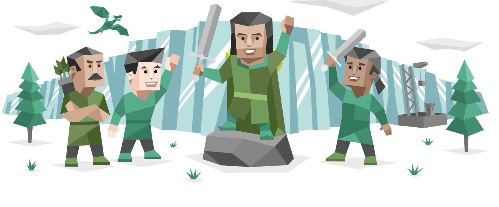
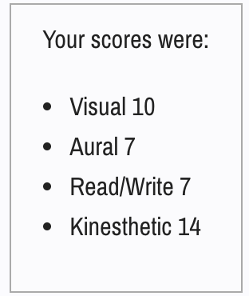
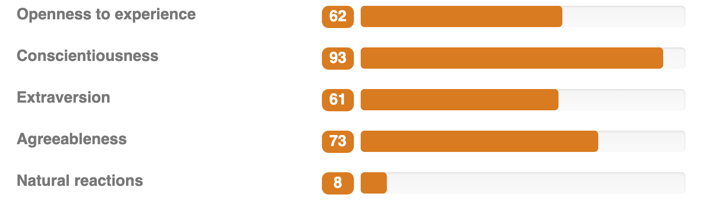

According to the MBTI – Type test that I took, I am a ‘Protagonist’ (ENFJ–A/ENFJ-T) personality type. The results indicate that I am a charismatic, passionate natural born leader. I (supposedly) hold natural confidence with the intention to influence people for the better. I’m attracted to strong, personalities and am not afraid to speak up when necessary. Communication comes easily to me and I’m able to observe other personalities and respond/cater to them appropriately. I (definitely) tend to give people the benefit of the doubt, which can be both a negative and a positive. Negative in the sense that I could be blindsided. The results also implied, that when working in a team/working environment, I hold the desire to cooperate well and assist when needed. I try to encourage everyone to feel comfortable enough in the group where everyone can express their suggestions and opinions freely so we can all work together to achieve the end goal. When working with my team, I think these qualities will be well fitted. If I see direction not being taken, I will gladly take the reins and get my team on the right track. Being aware of these results, when working with my team, it’ll lead me to make a conscious effort to ensure that everyone’s ideas/concerns/suggestions are taken into account and how we can work with them. (16personalities, ENFJ type n.d.)
According to this ‘learning styles test’ I am a visual/kinesthetics learner. I already knew this about myself, but it was very interesting to see the results presented to me. The results imply that I absorb more information when visual presentations/demonstrations are in front of me (diagrams, charts etc). On the other hand, I scored quite highly in kinesthetics, which is a hands-on approach. This means I am often very happy to work things out actively. An explanation can only get you so far, but I definitely think things really stick when I can apply what I’ve learnt. These things will come in handy to me when communicating with my group, especially when it comes to sharing files for our project, or any of the visuals that come along with online learning. All different media types will be accessible for my teammates and I, so I’d imagine we will be all able to learn in our preferred ways. (VARK Questionnaire n.d.).
I scored quite highly (high range) in conscientiousness, which implies that I’m very conscientious, disciplined and efficient. I also like everything well organised with a great attention to detail. In a work environment this would be very beneficial for me and my team. Having these traits gives me the ability to carry my weight to the best of my ability, taking the burden off of my team and allowing them to focus on their end of the deal. In saying that, I am always happy to help if someone else’s role is proving to be more difficult. Second highest score was agreeableness, followed by openness to experience, then extraversion and lastly natural reactions. All of my scores were actually in the mid – high range, besides natural reactions. Which I don’t necessarily agree with because I don’t believe that I am prone to worry and easily upset. (123Tests, Big 5 personality test report n.d.).
The higher scores in the other four categories are appropriate for working in a team, I would say. Preference in co-operation than conflict and competition is definitely ideal for we are all working together. Being assertive, outgoing and finding enjoyment in working with others is most definitely ideal as well. When navigating the team assignments, it’ll be important for me to have crew mates with the same attitudes and qualities. I think I will find it hard if not everyone is as driven to complete the task and do well, but I will be willing to encourage them and provide assistance if need be.
